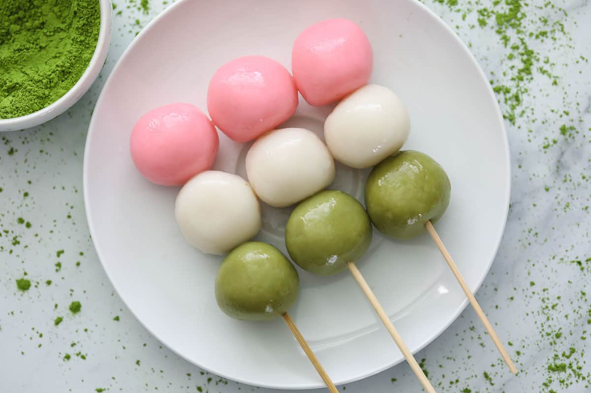

Hanami Dango Recipe
Published: Jan 24, 2024 by Reese Lienau
With Spring around the corner, you've got to check out this simple, 3-ingredient dessert symbolizing the pink of the spring cherry blossoms, the white of the winter snow, and the green of the summer grass. This Hanami Dango recipe is amazingly chewy and tender with just the right amount of sweetness!


What You’ll Need:
Joshinko glutinous rice flour
Shiratamako glutinous sweet rice flour
Powdered sugar - Optional but recommended.
Hot water
Matcha powder – For flavor and color
Strawberry powder - For flavor
Pink food coloring (Gel) – For color
How to Store Dango:
You can store this easy Hanami Dango in an airtight container at room temperature for up to 2 days. A cool place to store it is fine, but avoid the refrigerator because it will make the dango tough.
Lets Get Started!
MD
top
notes